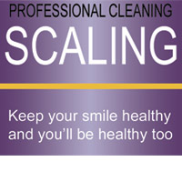

ROOT CANAL
|
Root Canal
Dental Clinics in Kumbakonam
The goal of root canal treatment is to save the tooth by removing the infected or damaged pulp, treating any infection, and filling the empty canals with an inert material. If root canal treatment is not done, the tooth may have to be extracted. When is root canal advised?
When tooth needs Root Canal Treatment? Root canal treatment is needed for two main reasons
|
CHILD DENTAL CARE KUMBAKONAM
|
Child Dental Care

Child Dental care in kumbakonam
For children, to ensure a healthy life for them in the future!
|

ORTHODONTIC TREATMENT
|
Orthodontic Treatment
Correction of MAL Aligned Teeth
Orthodontics is the branch of Dentistry that specializes in the diagnosis, prevention, and treatment of Dental and Facial irregularities. |
ARTIFICIAL TEETH
|
Artificial Teeth
If Missing teech are not replace.....
Artificial teetch can be replaced 2 weeks after extraction. |
DENTAL IMPLANTS
|
Dental Implants
Want Great Dental Implants Fast with No Hassle?
Our Dentists can make all the Difference? Advantages of Dental Implants over Dentures or a Bridge:
What is Dental Implant ? A dental implant is an artificial tooth replacement and is used to support restorations that resemble a tooth or group of teeth. What Dental Implant Can Do?
|
SCALING
|
Scaling

Keep your smile healthy and you'll be healthy too
Scaling is a procedure which removed the deposits, calculus and stains. |